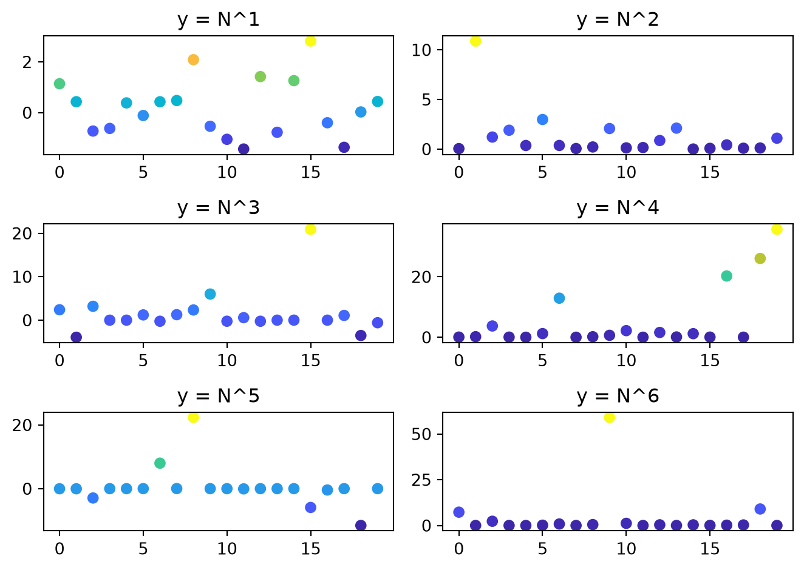

import sciris as sc
od = sc.odict(a=['some', 'strings'], b=[1,2,3])
print(od)#0: 'a': ['some', 'strings']
#1: 'b': [1, 2, 3]Needing a better way of ordering dictionaries was one of the original inspirations for Sciris back in 2014. In those dark days of Python <=3.6, dictionaries were unordered, which meant that dict.keys() could give you anything. (And you still can’t do dict.keys()[0], much less dict[0]). This tutorial describes Sciris’ ordered dict, the odict, its close cousin the objdict, and its pandas-powered pseudorelative, the dataframe.
odictIn basically every situation except one, an odict can be used like a dict. (Since this is a tutorial, see if you can intuit what that one situation is!) For example, creating an odictworks just like creating a regular dict:
#0: 'a': ['some', 'strings']
#1: 'b': [1, 2, 3]Okay, it doesn’t exactly look like a dict, but it is one:
Keys: ['a', 'b']
Values: [['some', 'strings'], [1, 2, 3]]
Items: [('a', ['some', 'strings']), ('b', [1, 2, 3])]Looks pretty much the same as a regular dict, except that od.keys() returns a regular list (so, yes, you can do od.keys()[0]). But, you can do things you can’t do with a regular dict, such as:
Item 0 is called a and has value ['some', 'strings']
Item 1 is called b and has value [1, 2, 3]We can, as you probably guessed, also retrieve items by index as well:
Remember the question about the situation where you wouldn’t use an odict? The answer is if your dict has integer keys, then although you still could use an odict, it’s probably best to use a regular dict. But even float keys are fine to use (if somewhat strange).
You might’ve noticed that the odict has more verbose output than a regular dict. This is because its primary purpose is as a high-level container for storing large(ish) objects.
For example, let’s say we want to store a number of named simulation results. Look at how we’re able to leverage the odict in the loop that creates the plots
import numpy as np
import matplotlib.pyplot as plt
class Sim:
def __init__(self, n=20, n_factors=6):
self.results = sc.odict()
self.n = n
self.n_factors = n_factors
def run(self):
for i in range(self.n_factors):
label = f'y = N^{i+1}'
result = np.random.randn(self.n)**(i+1)
self.results[label] = result
def plot(self):
with sc.options.context(jupyter=True): # Jupyter-optimized plotting
plt.figure()
rows,cols = sc.getrowscols(len(self.results))
for i,label,result in self.results.enumitems(): # odict magic!
plt.subplot(rows, cols, i+1)
plt.scatter(np.arange(self.n), result, c=result, cmap='parula')
plt.title(label)
sc.figlayout() # Trim whitespace from the figure
sim = Sim()
sim.run()
sim.plot()
We can quickly access these results for exploratory data analysis without having to remember and type the labels explicitly:
Sim results are
#0: 'y = N^1':
array([ 1.13716259, 0.42931106, -0.72378452, -0.62148245, 0.38350129,
-0.11317814, 0.42778882, 0.47600853, 2.08328799, -0.53680894,
-1.04909225, -1.43114008, 1.4170647 , -0.77270084, 1.25861536,
2.81732868, -0.39689235, -1.36328163, 0.0277852 , 0.4380881 ])
#1: 'y = N^2':
array([4.50206669e-02, 1.08879208e+01, 1.20968191e+00, 1.89752238e+00,
3.59441688e-01, 2.97967097e+00, 3.61690772e-01, 5.24542952e-02,
2.10893759e-01, 2.06921536e+00, 1.20377040e-01, 1.52383981e-01,
8.60779516e-01, 2.10860266e+00, 3.82267389e-03, 7.21667907e-02,
4.18432241e-01, 8.40648244e-02, 1.07020191e-01, 1.09488015e+00])
#2: 'y = N^3':
array([ 2.39882095e+00, -3.93026287e+00, 3.18827456e+00, -4.22460051e-03,
-1.69091555e-03, 1.20972300e+00, -2.50034414e-01, 1.26545354e+00,
2.34386145e+00, 6.01000686e+00, -2.42621087e-01, 5.77821764e-01,
-2.48450758e-01, 6.03774475e-04, 4.03542072e-03, 2.09218079e+01,
-2.12034625e-04, 1.09070025e+00, -3.52820051e+00, -5.86983791e-01])
#3: 'y = N^4':
array([4.57652268e-02, 1.82818333e-01, 3.72710657e+00, 3.98545521e-02,
7.68043840e-04, 1.21074212e+00, 1.29212259e+01, 7.38379946e-03,
1.71972616e-01, 6.39471824e-01, 2.18802735e+00, 1.21632488e-02,
1.58236183e+00, 8.93492294e-02, 1.18641358e+00, 4.63369618e-02,
2.02543270e+01, 1.84542315e-02, 2.60491947e+01, 3.57174803e+01])
#4: 'y = N^5':
array([-2.90351696e-02, -3.85303687e-02, -2.93011924e+00, 3.15834892e-05,
9.92295083e-05, 8.18344351e-03, 7.99688340e+00, 2.43214750e-02,
2.23382100e+01, 5.11508237e-08, -4.17084100e-03, -6.98590840e-02,
1.03486649e-08, 5.84486895e-05, -2.27656406e-03, -5.90769032e+00,
-4.23141964e-01, 1.90340123e-04, -1.15522113e+01, -6.60585333e-07])
#5: 'y = N^6':
array([7.25454324e+00, 2.87871083e-03, 2.29645773e+00, 1.95911034e-07,
4.93276190e-05, 1.46560126e-01, 8.12515820e-01, 6.21820467e-04,
4.76006145e-01, 5.89783823e+01, 1.15334453e+00, 1.17509022e-05,
3.45808392e-01, 2.81607755e-07, 3.30276685e-01, 4.96400523e-02,
1.51602798e-01, 2.73540407e-01, 8.99328830e+00, 1.38589020e-04])
The first set of results is
[ 1.13716259 0.42931106 -0.72378452 -0.62148245 0.38350129 -0.11317814
0.42778882 0.47600853 2.08328799 -0.53680894 -1.04909225 -1.43114008
1.4170647 -0.77270084 1.25861536 2.81732868 -0.39689235 -1.36328163
0.0277852 0.4380881 ]
The first set of results has median
0.206 (95% CI: -1.399, 2.469)This is a have-your-cake-and-eat-it-too situation: the first set of results is correctly labeled (sim.results['y = N^1']), but you can easily access it without having to type all that (sim.results[0]).
objdictWhen you’re just writing throwaway analysis code, it can be a pain to type mydict['key1']['key2'] over and over. (Right-pinky overuse is a real medical issue.) Wouldn’t it be nice if you could just type mydict.key1.key2, but otherwise have everything work exactly like a dict? This is where the objdict comes in: it’s identical to an odict (and hence like a regular dict), except you can use “object syntax” (a.b) instead of “dict syntax” (a['b']). This is especially handy for using f-strings, since you don’t have to worry about nested quotes:
Checking ob[0] = ['some', 'strings']
Checking ob.key1 = ['some', 'strings']
Checking ob["key1"] = ['some', 'strings']In most cases, you probably want to use objdicts rather than odicts just to have the extra flexibility. Why would you ever use an odict over an objdict? Mostly just because there’s small but nonzero overhead in doing the extra attribute checking: odict is faster (faster than even collections.OrderedDict, though slower than a plain dict). The differences are tiny (literally nanoseconds) so won’t matter unless you’re doing millions of operations. But if you’re reading this, chances are high that you do sometimes need to do millions of dict operations.
The Sciris sc.dataframe() works exactly like pandas pd.DataFrame(), with a couple extra features, mostly to do with creation, indexing, and manipulation.
Any valid pandas dataframe initialization works exactly the same in Sciris. However, Sciris is a bit more flexible about how you can create the dataframe, again optimized for letting you make them quickly with minimal code. For example:
It’s not a huge difference, but the Sciris one is shorter. Sciris also makes it easier to define types on dataframe creation:
x y z
0 a 1.0 True
1 b 2.0 False
2 c 3.0 TrueYou can also define data types along with the columns:
x y z
0 a 1.0 True
1 b 2.0 False
2 c 3.0 TrueThe df.disp() command will do its best to show the full dataframe. By default, Sciris dataframes (just like pandas) are shown in abbreviated form:
0 1 2 3 4 5 6 \
0 0.335294 0.223848 0.252123 0.785680 0.152015 0.346687 0.109599
1 0.335213 0.008961 0.024102 0.692809 0.923248 0.819240 0.238793
2 0.606757 0.440113 0.755085 0.247348 0.818887 0.736576 0.158501
3 0.833026 0.125391 0.317591 0.822925 0.773521 0.034314 0.105481
4 0.485915 0.595440 0.354797 0.031657 0.013887 0.402145 0.410445
.. ... ... ... ... ... ... ...
65 0.263123 0.792370 0.026025 0.555800 0.641105 0.516606 0.500730
66 0.760329 0.090530 0.685265 0.619552 0.632066 0.825103 0.035491
67 0.335626 0.954118 0.701300 0.421058 0.799451 0.543397 0.405830
68 0.006571 0.940613 0.352901 0.338718 0.123696 0.973484 0.078449
69 0.312204 0.960706 0.671775 0.917865 0.269533 0.476480 0.490484
7 8 9
0 0.162372 0.858635 0.007304
1 0.093678 0.293643 0.567886
2 0.911640 0.759635 0.688983
3 0.144321 0.889881 0.688166
4 0.946370 0.963824 0.008943
.. ... ... ...
65 0.726974 0.061453 0.421411
66 0.273756 0.356832 0.580670
67 0.247802 0.111823 0.954554
68 0.474932 0.245882 0.678085
69 0.175875 0.587669 0.564210
[70 rows x 10 columns]But sometimes you just want to see the whole thing. The official way to do it in pandas is with pd.options_context, but this is a lot of effort if you’re just poking around in a script or terminal (which, if you’re printing a dataframe, you probably are). By default, df.disp() shows the whole damn thing:
0 1 2 3 4 5 6 7 8 9
0 0.3353 0.2238 0.2521 0.7857 0.1520 0.3467 0.1096 1.6237e-01 0.8586 0.0073
1 0.3352 0.0090 0.0241 0.6928 0.9232 0.8192 0.2388 9.3678e-02 0.2936 0.5679
2 0.6068 0.4401 0.7551 0.2473 0.8189 0.7366 0.1585 9.1164e-01 0.7596 0.6890
3 0.8330 0.1254 0.3176 0.8229 0.7735 0.0343 0.1055 1.4432e-01 0.8899 0.6882
4 0.4859 0.5954 0.3548 0.0317 0.0139 0.4021 0.4104 9.4637e-01 0.9638 0.0089
5 0.8084 0.8557 0.9569 0.5303 0.5671 0.8326 0.7390 9.9152e-05 0.4302 0.9691
6 0.7888 0.2070 0.5243 0.7364 0.1499 0.9706 0.5153 6.5597e-01 0.4768 0.6847
7 0.6125 0.8424 0.6953 0.1690 0.3874 0.0042 0.5668 6.4713e-01 0.7128 0.2805
8 0.1450 0.8963 0.6228 0.2479 0.7342 0.7866 0.3964 8.9892e-01 0.1101 0.4592
9 0.6307 0.3676 0.3480 0.3894 0.2083 0.6053 0.3851 8.4641e-01 0.9350 0.1027
10 0.2602 0.0559 0.3360 0.9653 0.5967 0.5664 0.1809 9.9291e-01 0.9920 0.8540
11 0.5343 0.6674 0.0992 0.7384 0.3075 0.1181 0.8771 8.4657e-01 0.1628 0.9363
12 0.0327 0.0141 0.9647 0.8565 0.7864 0.5553 0.6516 2.9449e-01 0.5280 0.4521
13 0.5981 0.1291 0.0934 0.4580 0.0122 0.5931 0.1532 8.5948e-01 0.7675 0.4080
14 0.5438 0.1413 0.4483 0.1024 0.2810 0.0189 0.4388 6.8153e-01 0.3871 0.1382
15 0.0521 0.5487 0.5501 0.1440 0.8125 0.8761 0.7568 2.7997e-01 0.6649 0.9956
16 0.7790 0.1278 0.6691 0.0655 0.1528 0.7986 0.7327 6.6661e-01 0.1262 0.7111
17 0.6778 0.7813 0.1977 0.5252 0.3039 0.8669 0.6259 4.6756e-01 0.1029 0.9241
18 0.3521 0.2286 0.7489 0.0685 0.8747 0.8177 0.5758 4.5833e-01 0.0306 0.5833
19 0.8722 0.0309 0.9499 0.6616 0.5349 0.2507 0.9711 8.6699e-01 0.2239 0.3851
20 0.5592 0.5082 0.7510 0.7830 0.4681 0.0639 0.7018 7.5453e-01 0.7495 0.3578
21 0.8981 0.2768 0.8668 0.6402 0.0033 0.4913 0.1179 9.6045e-01 0.1385 0.6058
22 0.4808 0.0538 0.2556 0.3531 0.7523 0.4951 0.8202 7.9725e-03 0.1504 0.0371
23 0.7635 0.1966 0.0311 0.2992 0.8347 0.8215 0.8125 6.4836e-01 0.5709 0.0303
24 0.2205 0.0053 0.3486 0.2278 0.5199 0.5980 0.8397 7.2345e-01 0.9944 0.2800
25 0.8952 0.3170 0.4990 0.6972 0.1837 0.2206 0.4196 1.0818e-01 0.8463 0.3917
26 0.1721 0.4093 0.6772 0.3349 0.9361 0.3382 0.9637 5.6825e-01 0.8032 0.6367
27 0.0586 0.9334 0.4470 0.8670 0.2874 0.8335 0.1149 9.3826e-01 0.1727 0.5564
28 0.3947 0.3366 0.8961 0.8427 0.8526 0.0921 0.3138 3.3741e-01 0.1714 0.4437
29 0.3116 0.9738 0.9960 0.6381 0.5633 0.0808 0.9049 6.1579e-01 0.3280 0.5004
30 0.1393 0.0895 0.0568 0.5778 0.6903 0.6044 0.0870 6.4831e-01 0.9640 0.7804
31 0.4804 0.9044 0.2862 0.7618 0.3037 0.8383 0.2002 9.3445e-01 0.9510 0.7348
32 0.8003 0.9036 0.1972 0.6581 0.9338 0.1453 0.0027 9.8557e-01 0.7350 0.8155
33 0.0116 0.1633 0.4661 0.9712 0.3792 0.8225 0.9861 9.7282e-01 0.5354 0.4206
34 0.1022 0.7332 0.1234 0.8653 0.4887 0.0430 0.4099 7.7501e-01 0.9330 0.4707
35 0.4152 0.0715 0.6514 0.2677 0.4095 0.6988 0.7688 9.3420e-02 0.8307 0.0337
36 0.2941 0.2424 0.0788 0.1261 0.1275 0.3124 0.0111 7.1705e-01 0.8056 0.8167
37 0.6780 0.2478 0.3107 0.0650 0.8099 0.7161 0.9287 6.9151e-01 0.4777 0.3595
38 0.5735 0.0660 0.3173 0.5010 0.1498 0.2114 0.7655 8.4628e-02 0.5106 0.1358
39 0.4317 0.0824 0.2731 0.8018 0.2297 0.6311 0.8912 7.7823e-02 0.6729 0.2099
40 0.8971 0.3300 0.2378 0.7296 0.3398 0.0590 0.6640 9.8056e-01 0.9324 0.5708
41 0.7935 0.6775 0.0482 0.5870 0.2164 0.3039 0.5350 7.9710e-01 0.4151 0.3630
42 0.9420 0.7163 0.7433 0.6239 0.1519 0.6458 0.2355 2.9977e-01 0.0261 0.8916
43 0.8418 0.5095 0.1814 0.0318 0.1444 0.8267 0.1217 5.1953e-01 0.8481 0.8045
44 0.6631 0.0969 0.2277 0.1100 0.5042 0.0626 0.5523 1.8430e-01 0.3629 0.4558
45 0.5567 0.6307 0.6082 0.8351 0.6923 0.7868 0.1017 6.5246e-01 0.4871 0.2556
46 0.7193 0.1401 0.2048 0.3356 0.2323 0.0878 0.8676 4.7401e-01 0.0500 0.7698
47 0.7618 0.5911 0.8132 0.1619 0.4167 0.8407 0.3839 9.5856e-02 0.2528 0.0474
48 0.4987 0.5569 0.8383 0.9864 0.1343 0.3819 0.3983 9.4892e-01 0.9876 0.1268
49 0.5630 0.7619 0.9029 0.5148 0.0090 0.6652 0.0858 8.2631e-01 0.5076 0.3678
50 0.1699 0.1800 0.4028 0.7128 0.1633 0.1588 0.7112 7.1992e-02 0.8446 0.3249
51 0.3895 0.4545 0.6313 0.4843 0.4281 0.5304 0.6013 5.1280e-01 0.8620 0.4113
52 0.0093 0.4278 0.4816 0.0612 0.1017 0.2683 0.9950 7.1458e-01 0.3249 0.1148
53 0.8829 0.2553 0.3588 0.3824 0.6534 0.7908 0.5840 8.4091e-01 0.7077 0.1540
54 0.3623 0.0027 0.7698 0.3360 0.2895 0.3986 0.7244 6.9908e-01 0.0570 0.4328
55 0.3694 0.5893 0.5727 0.9245 0.4835 0.3119 0.2991 5.6330e-01 0.4763 0.3726
56 0.2341 0.9025 0.5045 0.4594 0.8516 0.5368 0.6696 7.0435e-01 0.6084 0.3887
57 0.1790 0.3539 0.5920 0.4326 0.7906 0.5881 0.5815 2.8308e-01 0.8707 0.0540
58 0.9482 0.7489 0.0140 0.3984 0.1794 0.3749 0.3357 4.9503e-02 0.2346 0.5122
59 0.1673 0.3439 0.3413 0.7267 0.1264 0.0705 0.7883 1.0604e-02 0.2082 0.4027
60 0.8847 0.4824 0.6089 0.4177 0.3038 0.6100 0.3649 6.0844e-01 0.6781 0.6085
61 0.9528 0.1722 0.9462 0.4919 0.5777 0.9021 0.2411 8.7157e-01 0.6142 0.8600
62 0.6391 0.7763 0.6583 0.7435 0.8599 0.9681 0.7200 8.1158e-01 0.1213 0.1075
63 0.6728 0.7488 0.0221 0.9364 0.6152 0.9823 0.9218 1.2614e-01 0.7519 0.0004
64 0.9005 0.0793 0.7630 0.1820 0.0739 0.7252 0.9198 8.8974e-01 0.4306 0.4340
65 0.2631 0.7924 0.0260 0.5558 0.6411 0.5166 0.5007 7.2697e-01 0.0615 0.4214
66 0.7603 0.0905 0.6853 0.6196 0.6321 0.8251 0.0355 2.7376e-01 0.3568 0.5807
67 0.3356 0.9541 0.7013 0.4211 0.7995 0.5434 0.4058 2.4780e-01 0.1118 0.9546
68 0.0066 0.9406 0.3529 0.3387 0.1237 0.9735 0.0784 4.7493e-01 0.2459 0.6781
69 0.3122 0.9607 0.6718 0.9179 0.2695 0.4765 0.4905 1.7587e-01 0.5877 0.5642You can also pass other options if you want to customize it further:
0 1 ... 8 9
0 3.4e-01 2.2e-01 ... 8.6e-01 7.3e-03
1 3.4e-01 9.0e-03 ... 2.9e-01 5.7e-01
2 6.1e-01 4.4e-01 ... 7.6e-01 6.9e-01
3 8.3e-01 1.3e-01 ... 8.9e-01 6.9e-01
4 4.9e-01 6.0e-01 ... 9.6e-01 8.9e-03
.. ... ... ... ... ...
65 2.6e-01 7.9e-01 ... 6.1e-02 4.2e-01
66 7.6e-01 9.1e-02 ... 3.6e-01 5.8e-01
67 3.4e-01 9.5e-01 ... 1.1e-01 9.5e-01
68 6.6e-03 9.4e-01 ... 2.5e-01 6.8e-01
69 3.1e-01 9.6e-01 ... 5.9e-01 5.6e-01
[70 rows x 10 columns]All the regular pandas methods (df['mycol'], df.mycol, df.loc, df.iloc, etc.) work exactly the same. But Sciris gives additional options for indexing. Specifically, getitem commands (what happens under the hood when you call df[thing]) will first try the standard pandas getitem, but then fall back to iloc if that fails. For example:
——————————————————————— Regular pandas indexing ——————————————————————— 23 ————————————————————————— Pandas-like iloc indexing ————————————————————————— x 2 values 23 valid 0 Name: 1, dtype: int64 ——————————————————————— Automatic iloc indexing ——————————————————————— x 2 values 23 valid 0 Name: 1, dtype: int64
One quirk of pandas dataframes is that almost every operation creates a copy rather than modifies the original dataframe in-place (leading to the infamous SettingWithCopyWarning.) This is extremely helpful, and yet, sometimes you do want to modify a dataframe in place. For example, to append a row:
x y z
0 a 1 1
1 b 2 0
2 c 3 1
3 d 4 0That was easy! For reference, here’s the pandas equivalent (since append was deprecated):
That’s rather a pain to type, and if you mess up (e.g. type newrow instead of [newrow]), in some cases it won’t even fail, just give you the wrong result! Crikey.
Just like how sc.cat() will take anything vaguely arrayish and turn it into an actual array, sc.dataframe.cat() will do the same thing: